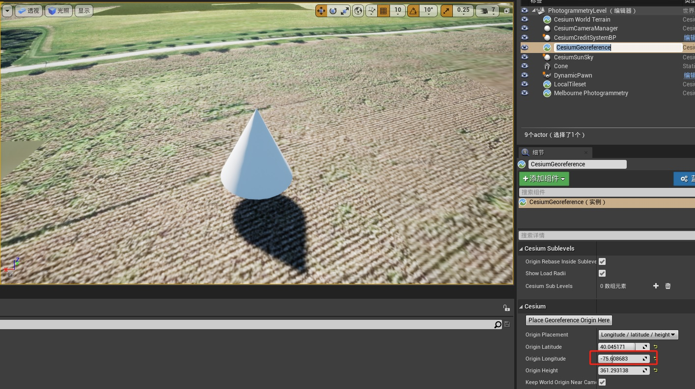

一、添加静态风格体（static meshes）
二、真实世界椭球与游戏世界坐标系
由于地球曲率的影响，距离 CesiumGeoreference 原点越远，铅垂线的方向误差越大，每一公里方向偏差大概 0.01 度。当我们从地球的一端到对面的一端时，重力的方向就转了 180 度。
可以从以下几方面解决（由易到难）：
- 待在一个相对较小的区域内，大概100公里左右；
- 在地球的每个部分设置独立的子关卡，每个子关卡都有自己的 CesiumGeoreference；
- 使用 CesiumGlobeAnchor 为 actor 添加有限的真实世界信息参考(参见下面的“我们可以将动态对象转换为地理引用对象”);
- 手动扩展你的游戏对象，以充分考虑真实椭圆地球影响。
三、一般的虚幻引擎对象的位置问题
一般的虚幻引擎对象是固定在游戏世界，而不固定在真实世界的位置
当 CesiumGeoreference 原点改变时，整个虚幻引擎世界将移动到地球上的一个新位置，包括其中的所有对象
开始放置的地方：

修改 CesiumGeoreference 原点后：
四、将动态对象转换为具有地理坐标参考的对象
1. 修改对象为可移动的

2. 添加 Cesium Globe Anchor 组件

通过添加 Cesium Globe Anchor 组件，就将这个 actor 对象转换为具有地理位置参考的对象了。
现在，我们可以更改 Cesium Globe Anchor 的原点，那么该物体将完全保持在地球上的位置。我们还可以直接指定 Longitude / Latitude / Height 或者 Earth-Centered, Earth-Fixed 的坐标，以将物体与精确的数值坐标放置在一起。

需要注意两点：
- 只能将 Cesium Globe Anchor 组件添加到可移动的 actor 上；
- 并不能解决所有的问题，尤其是重力方向的问题；